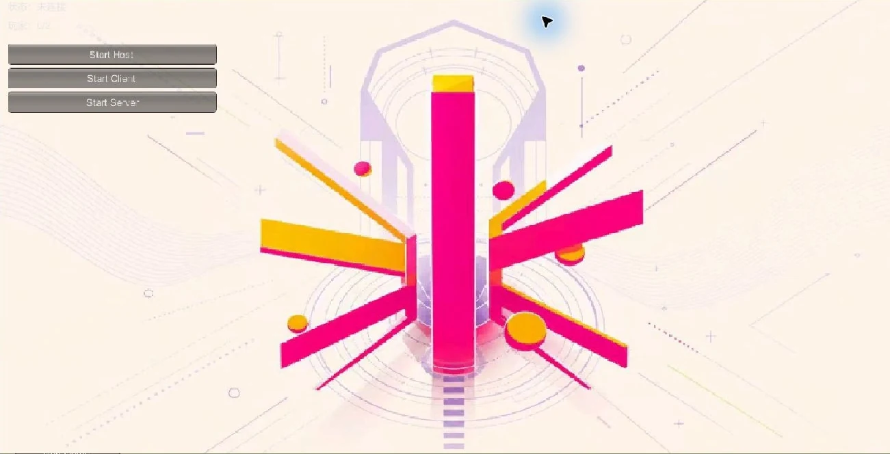
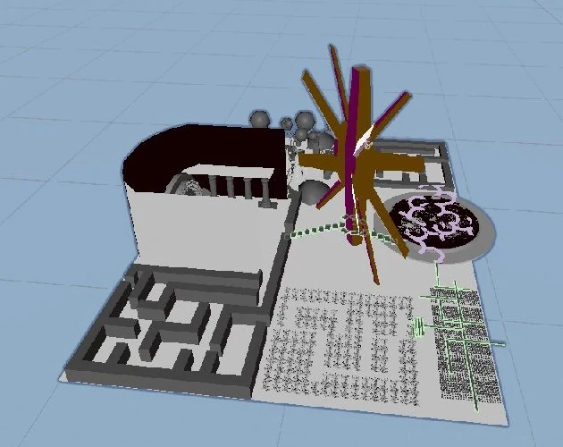

从双人设想，交付可复现的测试入口
发现的问题
双人玩法容易让下载者误以为已有跨设备匹配；原型实际使用 localhost 连接。
做出的调整
公开页明确同机运行两份程序：先 Host、再 Client，并列出麦克风与球体操作。让测试范围和玩法目标分别清楚。

比赛项目：2026 CiGA Game Jam2026.07.03–07.05 · 48 小时创作
01 / 玩家体验
声音既是交流，也是照明资源。公开 Windows 原型目前提供同一台电脑上的 Host / Client 测试。
02 / 设计重点
麦克风音量驱动所属球体的亮度。发声与空间可见性相连，玩家需要同时考虑交流、照明与探索方向。
球体可以拾取和蓄力投掷。把照明送到远处再判断路径，使一个简单物件同时承担反馈、探索和投掷操作。
两名玩家各自拥有第一人称视角与球体，从不同出生点寻找对方。网络对象按所属玩家处理输入，避免一人的操作影响另一人的视角。
03 / 项目画面


04 / 真实迭代
发现的问题
双人玩法容易让下载者误以为已有跨设备匹配；原型实际使用 localhost 连接。
做出的调整
公开页明确同机运行两份程序：先 Host、再 Client，并列出麦克风与球体操作。让测试范围和玩法目标分别清楚。
05 / 当前版本
免费 Windows x64 原型。目前需在同一台电脑运行两份程序，分别选择 Host 与 Client；不含跨电脑连接或房间码匹配。语音与完整双人流程仍需继续测试。